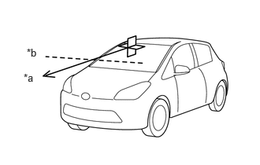
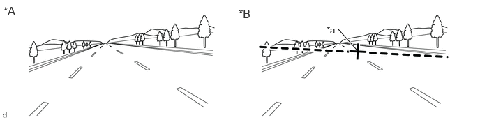
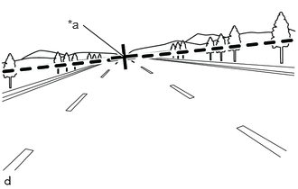
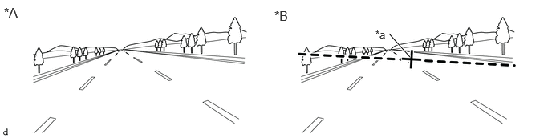
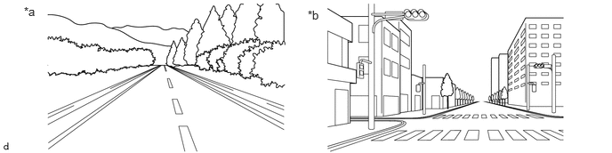
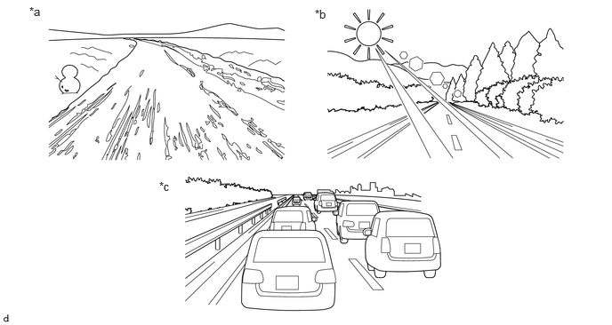
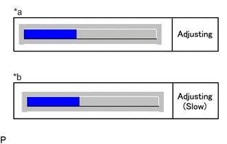

| Last Modified: 10-07-2025 | 6.11:8.1.0 | Doc ID: RM100000002H6RU |
| Model Year Start: 2024 | Model: Tacoma | Prod Date Range: [12/2023 - ] |
| Title: ADVANCED DRIVER ASSISTANCE SYSTEM: FRONT CAMERA: BEFORE STARTING DRIVING ADJUSTMENT; 2024 - 2026 MY Tacoma Tacoma HV [12/2023 - ] | ||
BEFORE STARTING DRIVING ADJUSTMENT
CAUTION / NOTICE / HINT
NOTICE:
When replacing the windshield glass of a vehicle equipped with a forward recognition camera, make sure to use a Toyota genuine part. If a non-Toyota genuine part is used, the forward recognition camera may not be able to be installed due to a missing bracket. Also, the front camera system, automatic high beam system or traffic jam assist system may not operate properly due to a difference in the transmissivity or black ceramic border.
HINT:
- Purpose of forward recognition camera optical
axis learning:
- If the installation position or orientation of the forward recognition camera is changed due to it being replaced with a new one or the windshield glass sub-assembly being replaced or removed and installed, it is necessary to perform forward recognition camera optical axis learning for the forward recognition camera to learn the driving direction of the vehicle and its horizontal axis in order for each driving support system to operate correctly.
- Driving direction of vehicle and horizontal axis

*a
Driving Direction
*b
Horizontal Axis
- Before adjustment 
*A
When using a new forward recognition camera
*B
When reusing forward recognition camera
*a
Previously learned driving direction
-
-
- After adjustment 
*a
Newly learned driving direction
- Before adjustment 
PROCEDURE
PROCEDURE
1. PERFORM DRIVING ADJUSTMENT
NOTICE:
- When performing the driving adjustment, obey all applicable traffic laws.
- Select a road where the driving adjustment can be carried out safely.
|
(a) Driving adjustment concept
|
|
(b) Driving conditions
- Perform the adjustment outside during daytime, on a sunny or cloudy day.
- If preceding vehicles are present, they should be kept at a distance of at least 20 m (66 ft.)
- Perform the adjustment mainly on a straight road without incline or decline, with a dry and smooth road surface.
- Do not perform the adjustment when there is a possibility of the vehicle slipping sideways such as on icy roads.
- Steer the vehicle straight without drifting or wobbling, and avoid sudden acceleration or deceleration.
- Drive at a vehicle speed of 30 km/h (19 mph) or more.
After driving the vehicle with all conditions met for approximately 5 to 15 minutes cumulatively, the adjustment will be completed.
HINT:
- If the adjustment does not complete within a total cumulative time of 15 minutes when the vehicle is driven with all conditions met, perform the adjustment on another route.
- If the adjustment does not complete within a total cumulative time of 30 minutes when the vehicle is driven with all conditions met, perform the adjustment using target recognition.
- If the vehicle is driven unsteadily or many lane changes are performed, the time taken for adjustment to complete may increase.
- If adjustment difficult judgments continue for 15 minutes, change the route.
(c) Road environment
HINT:
When driving on a bumpy or unpaved road, making frequent accelerations and decelerations, etc., the camera condition may be unstable, which may cause adjustment to take a long time.
- Road environments conducive to adjustment

*a
Roads with continuous white lines
*b
Roads with objects such as buildings or utility poles
- Road environments which hinder adjustment

*a
Roads with scenery that does not change
*b
Backlit or high-glare environments
*c
When surrounded by moving vehicles
-
-
(d) Axis adjustment difficult judgement.
- The system monitors the progress of the adjustment, and if it is determined that the vehicle is traveling in a road environment where adjustment is difficult, the buzzer sounds twice to notify the user.
- When it is determined that the vehicle is driving in a road environment where adjustment is difficult, the buzzer sounds at 20-second intervals.
- If it is determined that the vehicle is driving in a road environment where adjustment is not difficult, the buzzer does not sound.
HINT:
When performing adjustment with the GTS connected to the vehicle, "Adjusting (Slow)" is displayed on the progress confirmation screen when it is determined that the vehicle is driving in a road environment where adjustment is difficult.
|
*a |
During normal operation |
|
*b |
Driving in a road environment where adjustment is difficult |